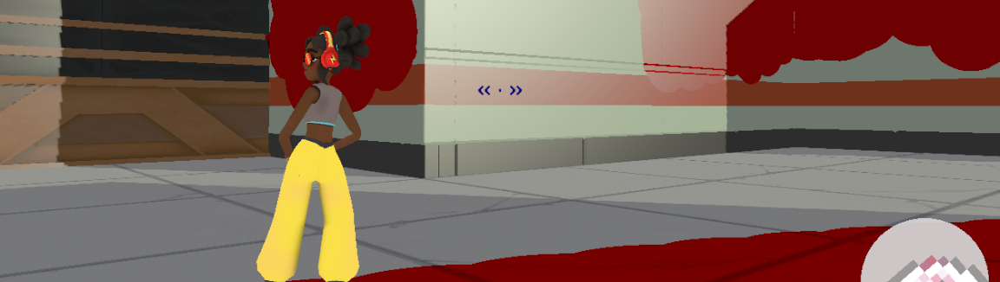

Team Project: Splat Impact
- Working within a team
- Developing a terrain painting system
- Effective player control system
- Data-based level generation, score system
Using C++, my team and I have worked on a game utilising a terrain painting system, networking, an improved player control system and more.
 Character/Camera Control System:I have worked on the implementation of physics middleware ReactPhysics3D to replace the physics code of the last game project, and the development of an improved character and camera control system.
This greatly improves user experience through changes to movement, whilst the movement of the player and camera are interpolated to allow for smooth movement. It can be found in the video below.
The camera control system allows for both an orbiting camera and conventional third person shooter "over-shoulder" position, with aformentioned smooth camera movement.
The character control system compares the player input direction with the current direction of movement of the character, applying additional force when the player intends to counter their current velocity.
This allows for responsive changes in direction, fast stops and sharp turning.
The game features singleplayer, local-splitscreen and networked multiplayer modes of play. In singleplayer the player must paint the map to the best of their ability whilst avoiding an AI-controlled enemy.
For local-splitscreen, the game has controller support.
In multiplayer modes, teams must compete to spread their paint colour across more of the map than their opponents.
In both modes, powerups are spread across the level, granting players advantages such as speed or a shotgun-like paint attack.
Key to all gameplay is the terrain painting system, for which a video can be found below. With this, players paint the environment to increase their team's score.
This system saves the collision positions of projectiles, and paints the terrain through using the fragment shader. This also passes through a colour value used to determine the colour of the paint impact.
These impact points are handled on an object-by-object basis, in which each object will overwrite old collisions past a specified limit to aid performance.
Projectiles make use of pooling, using a limited quantity of projectile objects which are recycled through their storage below the map in a "static" state when unused, compared to the near-constant creation and deletion of objects.
Map generation and score management:Due to multiple paint systems being developed and tested throughout development, I developed a score management system that is entirely independant of the graphical side of the paint system.
This effectively tracks the players' coverage of the map through nodes which are distributed across all placed objects and the accessible floor area. These react to projectile collisions, overriding their paint values if within the radius of the projectile.
The nodes are stored on a per-parent_object basis, these objects also stored within map_nodes, the grid positions by which the map is generated from a text file (an effective level design tool).
Hence, on a projectile collision, a spherical object of equal radius to the paint splatter checks terrain objects for overlap. On any that pass this check, the paint process is applied to the object, and its paint nodes are checked.
The change in both red and blue paint nodes then updates both the global score, and the score of the object's map_node, which is used by the games minimap to display the spread of each team's paint across the map.
The minimap also considers whether a node is of floor or wall-type, in order to alter the colouration to help the player differentiate between the two even when both are fully painted, to avoid gradual loss of usability.
The aformentioned text-based level generation allows for rapid editing of the map design in the absence of any in-engine design tool whose development would be unsuitable to the limited development time.
Different characters correspond to different terrain presets, through which the shape of the level can be altered, and other objects such as furniture placed. This was well suited to the grid based map_node system described above
The game uses irrKlang as sound middleware, with proper usage of sound, and also features a HUD and minimap.
Made using C++, in Visual Studio 2022.
Videos may be seen below.